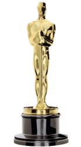
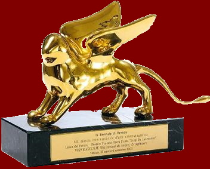
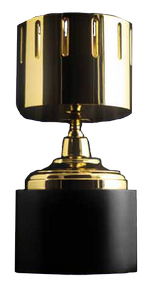

|
Awards |
Categories
| Year |
Film |
|  |
The Academy Award |
Best Animated Features |
2003 |
Spirited Away |
|  |
Venice Film Festival |
Golden Osella, Golden Lion for Lifetime Achievement, Mimmo Rotella Foundation Award |
2004, 2005, 2008 |
Howl's Moving Castle, Ponyo |
|  |
Annie Award |
Best Animated Feature, Directing in an Animated Feature Production, Writing in an Animated Feature Production |
2003, 2013 |
Spirited Away, The Wind Rises |
 |
Japan Academy Prize |
Best Photography, Special Award, Picture of the Year, Animation of the Year |
1989, 1990, 1998, 2002, 2009, 2013 |
My Neighbor Totoro, Kiki's Delivery Service, Princess Mononoke, Spirited Away, Ponyo, The Wind Rises |
|
Tokyo Anime Award |
Grand Prix, Best Director, Animation of the Year, Best Domestic Feature, Best Original Story |
2002, 2005, 2009 |
Spirited Away, Howl's Moving Castle, Ponyo |
|
Kinema Jumpo Awards |
Readers' Choice Award – Best Film, Japanese Movie Director Prize, Readers' Choice Award – Best Japanese Film, Best Film of the Year, Critics' Choice Award – Best Film, Critics' Choice Award – Best Director |
1984, 1989, 1990, 1998, 2002 |
Nausicaä of the Valley of the Wind, My Neighbor Tottoro, Kiki's Delivery Service. Princess Mononoke, Spirited Away |